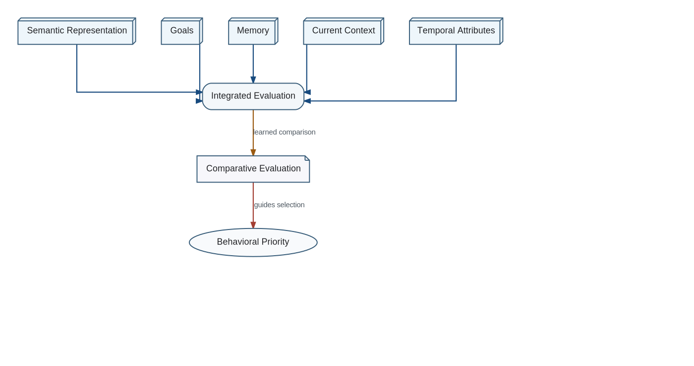

Representation alone does not determine behavior. Candidate actions, memories, goals, constraints, predicted outcomes, uncertainty, and current context must be compared by an Integrated Evaluation process.
Integrated Evaluation Inputs and Output

Integrated Evaluation is expected to be learned and highly conservative. Its internal representation may resemble a unified value space, but that phrase describes only one possible implementation and is not the architectural name.